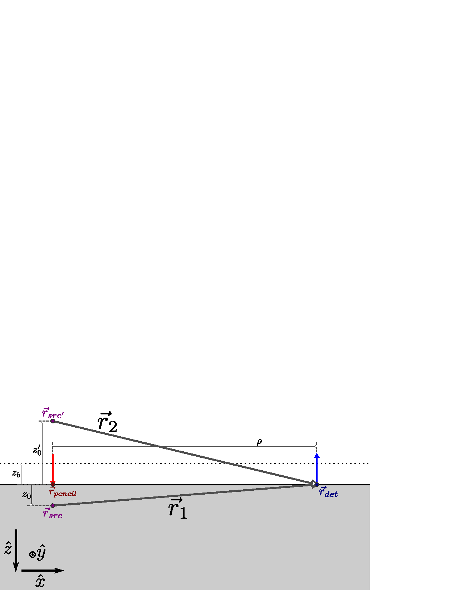

Forward Models
Forward Models
Diffuse Reflectance and Fluence
Diffuse Reflectance from A Semi-Infinite Homogeneous Medium

Considering a semi-infinite medium with extrapolated-boundary conditions, the R̃, defined as the net optical flux exiting the tissue per unit source power, may be written as : \[\widetilde{R}=\frac{1}{4\pi} \left( \widetilde{C}_2 e^{-\widetilde{\mu}_\mathrm{eff} \|\vec{r}_1\|} + \widetilde{C}_2 e^{-\widetilde{\mu}_\mathrm{eff} \|\vec{r}_2\|} \right) \label{equ:RCom_semiInf}\] \[\widetilde{C}_1=z_0 \left( \frac{1+\acrshort{mueffCom} \|\acrshort{r}_1\|}{\|\acrshort{r}_1\|^3} \right)\] \[\widetilde{C}_2=-z_0' \left( \frac{1+\widetilde{\mu}_\mathrm{eff} \|\vec{r}_2\|}{\|\vec{r}_2\|^3} \right)\] \[\acrshort{r}_1=\acrshort{r}_{det}-\acrshort{r}_{src}\] \[\acrshort{r}_2=\acrshort{r}_{det}-\acrshort{r}_{src'}\] \[\acrshort{r}_{src}=\acrshort{r}_{pencil}+z_0 \hat{z}\] \[\acrshort{r}_{src'}=\acrshort{r}_{pencil}+z_0' \hat{z}\] \[\acrshort{r}_{det}=\acrshort{rho}\hat{x}\] \[\vec{r}_{pencil}=\vec{0}\] where \(z_0\) is the depth of the real isotropic source (at \(\acrshort{r}_{src}\)): \[z_0=\frac{1}{\acrshort{musp}}\] \(z_0'\) is the height of the imaginary isotropic source (at \(\acrshort{r}_{src'}\)): \[z_0'=-z_0+2 z_b\] \(z_b\) is the extrapolated boundary height: \[z_b=-\frac{2 A}{3 \left(\mu_s'+\mu_a\right)}\] \(\acrshort{r}_{det}\) is the detector position and \(\vec{r}_{pencil}\) is the position of the pencil beam source on the surface of the semi-infinite medium. Here the pencil beam is assumed to be at the origin and the detector ρ away along the \(x\) axis, in general they can be anywhere on the surface and ρ is the distance between the pencil beam and the detector. The surface of the medium is at \(z=0\) with positive pointing into the medium, this implies the pencil beam must have a \(z\) coordinate of 0 and points in the positive \(z\) direction. The geometry of these vectors is shown in Figure 1.1.
Next we express μ̃eff: \[\acrshort{mueffCom}=\sqrt{3\left(\acrshort{musp}+\acrshort{mua}\right)\left(\acrshort{mua}-\frac{\acrshort{omega} \acrshort{n}_{in} i}{\acrshort{c}}\right)}\] c divided by \(n_{in}\) is describing the speed of light inside the medium (Equation [equ:speedOfLightIN]) and ω is expressed in terms of the FD fmod: \[\acrshort{omega}=2\pi \acrshort{fmod} \label{equ:omegaFromFMOD}\] The reflection parameter (\(A\)) describes the mismatch between n inside (\(n_{in}\)) and outside of the medium (\(\acrshort{n}_{out}\)) . For a typical mismatch of \(\acrshort{n}_{in}=\)1.4 and \(\acrshort{n}_{out}\)=1, \(A=\)2.949, code to generate this parameter value is found in Listing [lst:n2A] . The chief optical properties are μa and μ′s which may be considered the inputs to the R̃ forward model. The expression for R̃ is implemented in Listing [lst:RCom].
R from CW may also be obtained from Equation [equ:RCom_semiInf] by using μeff in the above expressions. The non-complex version of μeff is obtained by setting ω to zero, making all above variables real instead of complex and resulting in R instead of R̃. In FD one is often concerned with the I and φ. For FD what is referred to as I is the amplitude of R̃ (\(|\acrshort{RCom}|\)) and similarly φ is the angle of R̃ (\(\angle\acrshort{RCom}\)).
Equation [equ:RCom_semiInf] is derived from the extrapolated boundary condition (\(z_b\neq0\)). The expression may be simplified using the zero boundary condition which assume a completely absorbing surface by setting \(z_b=0\). The consequence of this is that \(\|\acrshort{r}_1\|=\|\acrshort{r}_2\|\) and Equation [equ:RCom_semiInf] becomes one exponential instead of the sum of two. Further assumptions about ρ being larger than \(z_0\) and μa being smaller than μ′s lead us to the typical statement that ln(ρ²I) is linear with ρ. It is these assumptions that lead to the linear slopes method in Appendix [app:absOptPropMeas] while the iterative recovery method in said Appendix does not use these assumptions and works directly with Equation [equ:RCom_semiInf].
Fluence in a Semi-Infinite Homogeneous Medium
Instead of describing the photons exiting the diffuse medium as with R̃ we may also describe the distribution of photons within the medium with the Φ̃. Using the same variables defined above for the expression of R̃ we can define the Green’s function for Φ̃: \[\acrshort{PHIcom}= \frac{3\acrshort{musp}}{4\pi} \left(\frac{e^{-\|\acrshort{r}_1\|\acrshort{mueffCom}}}{\|\acrshort{r}_1\|}-\frac{e^{-\|\acrshort{r}_2\|\acrshort{mueffCom}}}{\|\acrshort{r}_2\|}\right) \label{equ:PHIcom_semiInf}\] Here the same vector notation is used as Equation [equ:RCom_semiInf] above, but now \(\vec{r}_{det}\) can be anywhere within the medium and the retrieved value for Φ̃ is the Φ̃ at \(\acrshort{r}_{det}\). This can be imagined by examining Figure 1.1 where now \(\vec{r}_{det}\) position is inside the medium instead of on the surface.
As with other complex variables, Φ for CW can be obtained by setting ω to zero and using the same expression. The expression for Φ̃ is implemented in Listing [lst:PHIcom].
Diffuse Reflectance from a Layered Cylindrical Medium
The following diffusion theory derived expressions describe R̃ from a two layered cylinder with source at the center of the flat surface and R̃ measured on the same flat surface . As with the previous section, R may be obtained by setting ω or fmod to zero. To emphasize that the main independent variables are the ρ, μa, μ′s, and the thickness of the top layer (\(z_{top}\)), the dependent variables in these expressions are shown as functions of them. Other variables are in-fact independent but are not included in this notation. Examples of de-emphasized independent variables are n and ω. Furthermore, for brevity, this function notation is only used on the left-hand-side of the following expressions.
First, the following values are defined. The speed of light within the medium (\(v\)) in terms of c and n: \[v=\frac{\acrshort{c}}{\acrshort{n}} \label{equ:speedOfLightIN}\] where, c taken to be 2.99792458 × 1011 mm s−1. ω is defined in terms of fmod in Equation [equ:omegaFromFMOD]. Next, the diffusion coefficient (\(\mathcal{D}\)) is: \[\mathcal{D}\left(\acrshort{musp}_{,top/bot}\right)=\frac{1}{3 \acrshort{musp}_{,top/bot}}\] where, the subscript of μ′s tells whether the variable belongs to the top (\(top\)) or bottom (\(bot\)) layer. The approximate depth of the isotropic source (\(z_0\)) is redefined from the above section, now in terms of the top layer μ′s: \[z_0\left(\acrshort{musp}_{,top}\right)=\frac{1}{\acrshort{musp}_{,top}}\] The approximate extrapolated boundary height (\(z_b\)) is also redefined in this way: \[z_b\left(\acrshort{musp}_{,top}\right)=2 A \mathcal{D}_{top}\] where, \(A\) is the index of refraction mismatch parameter from the previous section .
Next, various coefficients are defined as a function of the \(k^{th}\) zero of the \(0^{th}\) order Bessel function of the first kind. First, the optical attenuation parameter (\(\widetilde{a}_k\)): \[\begin{split} \widetilde{a}_{k}\left(\acrshort{mua}_{,top/bot}, \acrshort{musp}_{,top/bot}\right)=\\ \sqrt{\frac{\acrshort{mua}_{,top/bot}}{\mathcal{D}_{top/bot}}+\left(\frac{j_{0,k}}{B} \right)^2+\frac{\acrshort{omega}}{v \mathcal{D}_{top/bot}} i} \end{split}\] where, the subscript of μa tells whether the variable belongs to the top (\(top\)) or bottom (\(bot\)) layer, \(j_{0,k}\) is the \(k^{th}\) zero of the \(0^{th}\) order Bessel function of the first kind, \(B\) is the radius of the two-layer cylinder (for which the source is in the center; \(B\) is typically assumed to be 150 mm). Then, the ρ parameter (\(Q_k\)) is written: \[Q_k\left(\acrshort{rho}\right)=\frac{J_{0}\left( \frac{\acrshort{rho} j_{0,k}}{B}\right)}{J_{1}\left( j_{0,k}\right)^2}\]
Now the reflectance for the case when the isotropic source is in the first layer (\(\widetilde{R}_1\)) can be expressed: \[\begin{split} \widetilde{R}_1\left(\rho, \mu_a_{,top}, \mu_s'_{,top}, z_{top}, \mu_a_{,bot}, \mu_s'_{,bot}\right)=\\ \frac{1}{\pi B^2} \sum_{k=1}^{\infty} \Bigg\{ \Bigg[\\ \frac{e^{-\widetilde{a}_{top,k} z_0} + e^{-\widetilde{a}_{top,k} (z_0 + 2 z_b)}}{2} \\ + \frac{\cosh\left( \widetilde{a}_{top,k} z_0 \right) \times \sinh\left( \widetilde{a}_{top,k} (z_0 + 2 z_b) \right)}{e^{\widetilde{a}_{top,k} (z_{top} + z_b)}} \\ \times \bigg(\mathcal{D}_{top} \widetilde{a}_{top,k} - \mathcal{D}_{bot} \widetilde{a}_{bot,k}\bigg) \\ \big/\bigg(\mathcal{D}_{top} \widetilde{a}_{top,k} \cosh\left( \widetilde{a}_{top,k} (z_{top} + z_b) \right) \\ + \mathcal{D}_{bot} \widetilde{a}_{bot,k} \sinh\left( \widetilde{a}_{top,k} (z_{top} + z_b) \right) \bigg)\\ \Bigg] Q_k \Bigg\} \end{split}\] where, \(z_{top}\) is the thickness of the top layer. For computation, infinite sums were typically done over × 103 terms.
To express the reflectance when the isotropic source is in the second layer (\(\widetilde{R}_2\)) additional coefficients are defined to simplify the expression: \[\widetilde{\alpha}_{1,k}\left(\acrshort{mua}_{,top}, \acrshort{musp}_{,top}\right)=e^{-\widetilde{a}_{top,k} z_b}\] \[\widetilde{\alpha}_{2,k}\left(\acrshort{mua}_{,top}, \acrshort{musp}_{,top}, z_{top}\right)=\acrshort{n}^2 e^{\widetilde{a}_{top,k} z_{top}}\] \[\begin{split} \widetilde{\alpha}_{3,k}\left(\acrshort{mua}_{,top}, \acrshort{musp}_{,top}, z_{top}\right)=\\ \widetilde{a}_{top,k} \mathcal{D}_{top} e^{\widetilde{a}_{top,k} z_{top}} \end{split}\] \[\widetilde{\beta}_{1,k}\left(\acrshort{mua}_{,top}, \acrshort{musp}_{,top}\right)=e^{\widetilde{a}_{top,k} z_b}\] \[\widetilde{\beta}_{2,k}\left(\acrshort{mua}_{,top}, \acrshort{musp}_{,top}, z_{top}\right)=\acrshort{n}^2 e^{-\widetilde{a}_{top,k} z_{top}}\] \[\begin{split} \widetilde{\beta}_{3,k}\left(\acrshort{mua}_{,top}, \acrshort{musp}_{,top}, z_{top}\right)=\\ -\widetilde{a}_{top,k} \mathcal{D}_{top} e^{-\widetilde{a}_{top,k} z_{top}} \end{split}\] \[\widetilde{\gamma}_{2,k}\left(z_{top}, \acrshort{mua}_{,bot}, \acrshort{musp}_{,bot}\right)=-\acrshort{n}^2 e^{-\widetilde{a}_{bot,k} z_{top}}\] \[\begin{split} \widetilde{\gamma}_{3,k}\left(z_{top}, \acrshort{mua}_{,bot}, \acrshort{musp}_{,bot}\right)=\\ \widetilde{a}_{bot,k} \mathcal{D}_{bot} e^{-\widetilde{a}_{bot,k} z_{top}} \end{split}\] \[\begin{split} \widetilde{\zeta}_{2,k}\left(\mu_s'_{,top}, z_{top}, \mu_a_{,bot}, \mu_s'_{,bot}\right)=\\ -\frac{n^2 e^{-\widetilde{a}_{bot,k} (z_{top}-z_0)}}{2 \widetilde{a}_{bot,k} \mathcal{D}_{bot}} \end{split}\] \[\begin{split} \widetilde{\zeta}_{3,k}\left(\mu_s'_{,top}, z_{top}, \mu_a_{,bot}, \mu_s'_{,bot}\right)=\\ -\frac{e^{\widetilde{a}_{bot,k} (z_{top}-z_0)}}{2} \end{split}\] Then combinations of these coefficients are defined. \[\begin{split} \widetilde{\Xi}_k\left(\mu_a_{,top}, \mu_s'_{,top}, z_{top}, \mu_a_{,bot}, \mu_s'_{,bot}\right)=\\ \widetilde{\alpha}_{1,k}\widetilde{\beta}_{2,k}\widetilde{\gamma}_{3,k}-\widetilde{\alpha}_{1,k}\widetilde{\beta}_{3,k}\widetilde{\gamma}_{2,k}\\ -\widetilde{\alpha}_{2,k}\widetilde{\beta}_{1,k}\widetilde{\gamma}_{3,k}+\widetilde{\alpha}_{3,k}\widetilde{\beta}_{1,k}\widetilde{\gamma}_{2,k} \end{split}\] \[\begin{split} \widetilde{\Upsilon}_k\left(\mu_a_{,top}, \mu_s'_{,top}, z_{top}, \mu_a_{,bot}, \mu_s'_{,bot}\right)=\\ -\frac{\widetilde{\beta}_{1,k} (\widetilde{\gamma}_{2,k} \widetilde{\zeta}_{3,k}-\widetilde{\gamma}_{3,k} \widetilde{\zeta}_{2,k})}{\widetilde{\Xi}_k} \end{split}\] \[\begin{split} \widetilde{\Psi}_k\left(\mu_a_{,top}, \mu_s'_{,top}, z_{top}, \mu_a_{,bot}, \mu_s'_{,bot}\right)=\\ \frac{\widetilde{\alpha}_{1,k} (\widetilde{\gamma}_{2,k} \widetilde{\zeta}_{3,k}-\widetilde{\gamma}_{3,k} \widetilde{\zeta}_{2,k})}{\widetilde{\Xi}_k} \end{split}\] Given all these coefficients the reflectance when the isotropic source is in the second layer (\(\acrshort{RCom}_2\)) can now be expressed: \[\begin{split} \widetilde{R}_2\left(\rho, \mu_a_{,top}, \mu_s'_{,top}, z_{top}, \mu_a_{,bot}, \mu_s'_{,bot}\right)=\\ \frac{1}{\pi B^2} \sum_{k=1}^{\infty}\left\{ \left[ \mathcal{D}_{top} \widetilde{a}_{top,k} (\widetilde{\Upsilon}_k-\widetilde{\Psi}_k) \right] Q_k \right\} \end{split}\] where, as before, the sum was typically done over × 103 terms.
Finally, the piece-wise expression for R̃ from a two-layer medium may be expressed: \[\begin{split} \widetilde{R}\left(\acrshort{rho}, \acrshort{mua}_{,top}, \acrshort{musp}_{,top}, z_{top}, \acrshort{mua}_{,bot}, \acrshort{musp}_{,bot}\right)=\\ \begin{cases} \acrshort{RCom}_1 & z_0 < z_{top} \\ \acrshort{RCom}_2 & z_0 \geq z_{top} \end{cases} \end{split} \label{equ:2LayR}\] As with Equation [equ:RCom_semiInf] R may be obtained by setting ω to zero.
Optical Properties
Absorption Coefficient
The μa is modeled as a linear combination of ε weighted by the chromophore concentrations. For one λ, μa can be expressed as follows: \[\acrshort{mua}=\sum_{k=1}^{N_{chrom}} C_k \acrshort{ext}_{C_k}\] where \(N_{chrom}\) is the number of chromophores, \(C_k\) is the concentration of chromophore \(k\), and \(\acrshort{ext}_{Ck}\) is the extinction of chromophore \(k\). However, ε is λ dependent, thus μa is also and the above equation is true for a continuum of λs. Therefore, the system can be written as follows: \[\begin{split} \begin{bmatrix} \acrshort{mua}(\acrshort{lam}_1)\\ \vdots\\ \acrshort{mua}(\acrshort{lam}_{N_{lam}})\\ \end{bmatrix}=\\ \begin{bmatrix} \acrshort{ext}_{C_1}(\acrshort{lam}_1) & \dots & \acrshort{ext}_{C_{N_{chrom}}}(\acrshort{lam}_1) \\ \vdots & \ddots & \vdots \\ \acrshort{ext}_{C_1}(\acrshort{lam}_{N_{lam}}) & \dots & \acrshort{ext}_{C_{N_{chrom}}}(\acrshort{lam}_{N_{lam}}) \\ \end{bmatrix}\\ \times \begin{bmatrix} C_1\\ \vdots\\ C_{N_{chrom}}\\ \end{bmatrix} \end{split}\] or after introducing E: \[\vec{\mu}_a=\mathbf{E}\harp{C} \label{equ:muaForward}\] Similarly if Δμa and chromophore concentration changes (\(\Delta C\)) are considered: \[\acrshort{dmuaVec}=\acrshort{EXT}\Delta\harp{C} \label{equ:dmuaForward}\] These expressions are general for \(N_{lam}\) λs and \(N_{chrom}\) chromophores.
These expressions can be formulated in various ways for various scenarios. Considering the case where only O and D are chromophores we have: \[\vec{\mu}_a= \begin{bmatrix} \harp{\varepsilon}_{\text{O}} & \harp{\varepsilon}_{\text{D}} \end{bmatrix} \begin{bmatrix} \text{O}\\ \text{D} \end{bmatrix}\] or for ΔO and ΔD: \[\Delta\vec{\mu}_a= \begin{bmatrix} \harp{\varepsilon}_{\text{O}} & \harp{\varepsilon}_{\text{D}} \end{bmatrix} \begin{bmatrix} \Delta O\\ \Delta D \end{bmatrix}\] Also the chomophores W and L can be added: \[\vec{\mu}_a= \begin{bmatrix} \harp{\varepsilon}_{\text{O}} & \harp{\varepsilon}_{\text{D}} & \harp{\varepsilon}_{\text{W}} & \harp{\varepsilon}_{\text{L}} \end{bmatrix} \begin{bmatrix} \text{O}\\ \text{D}\\ \text{W}\\ \text{L} \end{bmatrix}\] and even reformulated in terms of T and S instead of O and D: \[\vec{\mu}_a= \begin{bmatrix} \harp{\varepsilon}_{\text{O}} & \harp{\varepsilon}_{\text{D}} & \harp{\varepsilon}_{\text{W}} & \harp{\varepsilon}_{\text{L}} \end{bmatrix} \begin{bmatrix} \text{S}\text{T}\\ (1-\text{S})\text{T}\\ \text{W}\\ \text{L} \end{bmatrix}\] since: \[\acrshort{O}=\acrshort{S}\acrshort{T}\] \[\acrshort{D}=(1-\acrshort{S})\acrshort{T}\]
This suits to shows the the linear combination of chromophores can be used to model the λ dependence of μa. In Appendix [app:recChrom] these expressions are inverted to give a way to convert a measured μa to a chromophore concentration.
Reduced Scattering Coefficient
The μ′s can be modeled as a decreasing power law dependence with λ. This is because in the λ range and types of media considered in diffuse optics there is a plethora of different types of scattering events occurring that roughly have different power law dependencies with λ.1 Since diffuse optics is concerned with average behavior and primarily μ′s the overall λ dependence is modeled with b as follows: \[\acrshort{musp}(\acrshort{lam})=\acrshort{musp}(\acrshort{lam}_0)\left(\frac{\acrshort{lam}}{\acrshort{lam}_0}\right)^{-b}\] The scattering dependence can be thought of as a mixture of Mie scattering, which is not strongly λ dependent and Rayleigh scattering, which is strongly λ dependent. b typically takes values between 0–4 with the upper limit set based on the Rayleigh scattering dependence. In biological tissue a typical b value may be roughly between 1–2, however, this should not be considered a guideline for a typical b value since the retried value may be dependent on exact measurement methodology.
Listings
Available at:
https://github.com/DOIT-Lab/DOIT-Public/tree/master/Dissertations/GilesBlaney2022/code
Available at:
https://github.com/DOIT-Lab/DOIT-Public/tree/master/Dissertations/GilesBlaney2022/code
Available at:
https://github.com/DOIT-Lab/DOIT-Public/tree/master/Dissertations/GilesBlaney2022/code
The reduced scattering coefficient (μ′s) may have an oscillatory dependence on optical wavelength (λ) in addition to a power law, however, considering the range of and scattering particle sizes considered in this work only the power law dependence is considered.↩︎